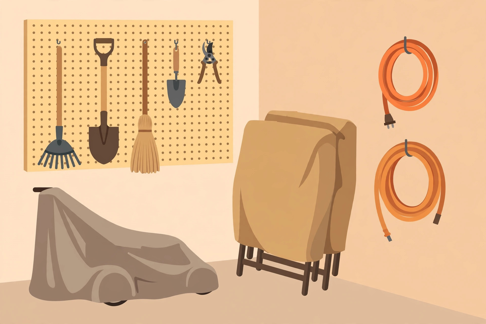

Storing tools and outdoor gear for winter

Everything you leave dirty, wet, or half-broken in November is a problem you'll pay for in April — rusted tools, a mower that won't start, cracked hoses, faded furniture. A couple of hours of put-away work now is the cheapest maintenance you'll ever do.
Hand tools: clean, dry, sharp
- Scrape off the dirt. Soil left on metal holds moisture against it all winter. Knock dirt off shovels, trowels, and pruners, then wipe blades with an oiled rag — any light oil works, even vegetable oil in a pinch.
- Sharpen cutting tools. Pruners, loppers, and shears cut cleanly — and clean cuts heal faster on plants. A few strokes with a sharpening file or stone is enough; you don't need a workshop setup.
- Oil wooden handles. A wipe of linseed or mineral oil keeps handles from drying and cracking over a dry winter.
- Store off the ground. Hang tools on a wall or pegboard rather than leaning them in a damp corner. Moisture wicks up from concrete floors.
⚠ Tool safety. Disconnect spark plugs before working on mower blades or decks. Wear gloves when handling blades and pruning tools. Drain and handle fuel outdoors only, away from sparks, pilot lights, or running engines. If a small engine needs real repair — not just storage prep — a small-engine shop is worth it.
Winterizing the lawnmower
Do this the same day as the last mow, while the mower is still out and warm:
- Clean the deck. Tip the mower (air filter side up) and scrape caked grass off the underside. Wet grass mats hold moisture against the metal and unbalance the blade.
- Change the oil if you're due (check your manual — most push mowers want it yearly). Dirty oil sitting all winter isn't ideal.
- Deal with the fuel. Old gasoline goes stale and gums up carburetors — the number one reason mowers won't start in spring. Either run the mower until it's out of fuel, or add fuel stabilizer to a full tank and run it a few minutes to circulate it. Follow your manual's recommendation.
- Remove the battery on electric-start or battery mowers, and store it somewhere it won't freeze. Clean the terminals first.
- Store it covered, off bare ground, in a shed or garage. A breathable cover beats a plastic tarp that traps condensation.
The same basics apply to string trimmers, blowers, and other small-engine gear: clean it, stabilize or drain the fuel, and store it dry.
Hoses and watering gear
- Drain every hose completely — stretch it downhill and let gravity work. Water left inside expands when it freezes and splits the hose from the inside out.
- Disconnect from faucets and shut off exterior water lines from the inside valve if your house has one. Leave the outside faucet open after draining so any remaining water has somewhere to go.
- Coil hoses loosely (tight kinks become weak spots) and hang them in the garage or shed. Bring sprinklers, nozzles, and timers inside.
Patio furniture and outdoor decor
- Clean before you cover. Wipe down tables and chairs — dirt and bird droppings etch finishes over winter. Fabric cushions come inside; damp cushions stored outdoors grow mildew.
- Cover or store. Breathable furniture covers work; a shed or garage is better. If furniture must stay out uncovered, at least tip chairs so water drains instead of pooling on seats.
- Grills: clean the grates, disconnect and store propane tanks upright in a ventilated spot (never indoors), and cover the grill. A full clean now means a ready-to-cook grill in spring.
- Empty ceramic and terracotta planters — or bring them inside. Soil left in them holds water, freezes, expands, and cracks the pot.
Setting up storage that lasts
If your shed or garage is chaos, winter is the wrong time to fix it — but you can at least give everything a zone: tools hung on one wall, chemicals and fuel on a high shelf away from kids and pets (check that lids are sealed), and big equipment with covers in the driest corner. Take a phone photo of where everything went; in April you'll thank yourself.
The two-hour rule. The whole job — tools cleaned and hung, mower winterized, hoses drained, furniture covered — takes most people about two hours, done right after the last mow. Schedule it like an appointment, because "later" in November usually means "never."